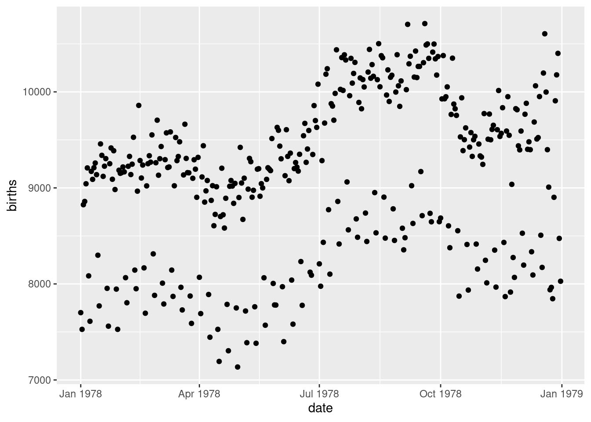

An Impressive Book
0.1 Using RMarkdown
0.1.1 Text
Text can be decorated with bold or italics. It is also possible to
- create links
- include mathematics like \(e=mc^2\) or \[y = \beta_0 + \beta_1 x_1 + \beta_2 x_2\]
Be sure to put a space after the * when you are creating bullets and a space after # when creating section headers, but not between $ and the mathematical formulas.
0.1.2 Graphics
If the code of an R chunk produces a plot, this plot can be displayed in the resulting file.

0.1.3 R output
Other forms of R output are also displayed as they are produced.
## min Q1 median Q3 max mean sd n missing
## 7135 8554 9218 9705 10711 9132.162 817.8821 365 00.1.4 Destination formats
This file can be knit to HTML, PDF, or Word. In RStudio, just select the desired output file type
and click on Knit HTML, Knit PDF, or Knit Word. Use the dropdown menu next to that to
change the desired file type.
0.1.5 Documenting file creation
It’s useful to record some information about how your file was created.
- File creation date: 2021-01-29
- R version 3.6.0 (2019-04-26)
- R version (short form): 3.6.0
mosaicpackage version: 1.6.0- Additional session information
## R version 3.6.0 (2019-04-26)
## Platform: x86_64-redhat-linux-gnu (64-bit)
## Running under: CentOS Linux 7 (Core)
##
## Matrix products: default
## BLAS/LAPACK: /usr/lib64/R/lib/libRblas.so
##
## locale:
## [1] LC_CTYPE=en_US.UTF-8 LC_NUMERIC=C
## [3] LC_TIME=en_US.UTF-8 LC_COLLATE=en_US.UTF-8
## [5] LC_MONETARY=en_US.UTF-8 LC_MESSAGES=en_US.UTF-8
## [7] LC_PAPER=en_US.UTF-8 LC_NAME=C
## [9] LC_ADDRESS=C LC_TELEPHONE=C
## [11] LC_MEASUREMENT=en_US.UTF-8 LC_IDENTIFICATION=C
##
## attached base packages:
## [1] stats graphics grDevices utils datasets methods base
##
## other attached packages:
## [1] mosaic_1.6.0 Matrix_1.2-17 mosaicData_0.17.0 ggformula_0.9.2
## [5] ggstance_0.3.3 ggplot2_3.3.3 lattice_0.20-38 dplyr_0.8.5
##
## loaded via a namespace (and not attached):
## [1] tidyselect_1.0.0 xfun_0.19 purrr_0.3.3 splines_3.6.0
## [5] colorspace_1.4-1 vctrs_0.2.4 generics_0.0.2 htmltools_0.5.0
## [9] yaml_2.2.0 rlang_0.4.5 later_1.0.0 pillar_1.4.3
## [13] glue_1.3.2 withr_2.1.2 lifecycle_0.2.0 mosaicCore_0.6.0
## [17] stringr_1.4.0 munsell_0.5.0 gtable_0.3.0 htmlwidgets_1.3
## [21] evaluate_0.14 labeling_0.3 knitr_1.30 fastmap_1.0.1
## [25] httpuv_1.5.2 crosstalk_1.0.0 fansi_0.4.1 broom_0.5.2
## [29] Rcpp_1.0.6 readr_1.3.1 xtable_1.8-4 promises_1.1.0
## [33] scales_1.1.0 backports_1.1.4 leaflet_2.0.2 farver_2.0.3
## [37] mime_0.8 gridExtra_2.3 hms_0.5.3 digest_0.6.25
## [41] stringi_1.4.5 bookdown_0.21 ggrepel_0.9.0 shiny_1.4.0
## [45] grid_3.6.0 cli_2.0.1 tools_3.6.0 magrittr_2.0.1
## [49] lazyeval_0.2.2 tibble_3.0.0 ggdendro_0.1-20 crayon_1.3.4
## [53] tidyr_1.0.0 pkgconfig_2.0.3 MASS_7.3-51.4 ellipsis_0.3.0
## [57] assertthat_0.2.1 rmarkdown_2.5 R6_2.4.1 nlme_3.1-139
## [61] compiler_3.6.0